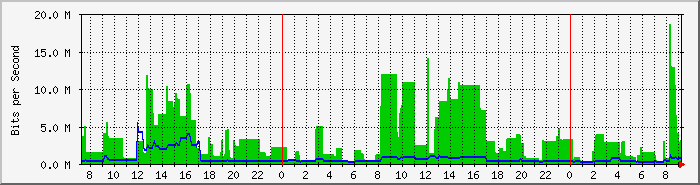
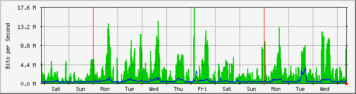
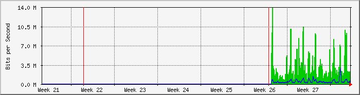
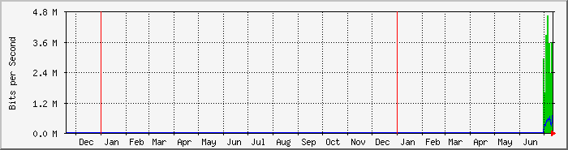

Mikrotik RB951Ui-2HnD Interfaz WAN (ether3) - Gigared 30M - Resistencia Chaco
| Equipo: | MikroTik RB951Ui-2HnD |
| Mantenido por: | redes@ersaurbano.com |
| Descripcion: | ether3 |
| Tipo de Puerta: | ethernetCsmacd (6) |
| Nombre de Puerta: | ether3 |
| Max Speed: | 12.5 MBytes/s |
| Ip: | 190.183.237.202 (No DNS name) |
The statistics were last updated Thursday, 14 July 2022 at 9:16,
at which time 'Chaco MikroTik' had been up for 51 days, 23:43:58.
`Daily' Graph (5 Minute Average)

|
Max |
Average |
Current |
| In |
18.6 Mb/s (18.6%) |
3573.6 kb/s (3.6%) |
3126.0 kb/s (3.1%) |
| Out |
5436.0 kb/s (5.4%) |
683.9 kb/s (0.7%) |
532.3 kb/s (0.5%) |
`Weekly' Graph (30 Minute Average)

|
Max |
Average |
Current |
| In |
17.6 Mb/s (17.6%) |
2875.0 kb/s (2.9%) |
8370.5 kb/s (8.4%) |
| Out |
3430.8 kb/s (3.4%) |
465.2 kb/s (0.5%) |
751.5 kb/s (0.8%) |
`Monthly' Graph (2 Hour Average)

|
Max |
Average |
Current |
| In |
14.0 Mb/s (14.0%) |
3000.0 kb/s (3.0%) |
1256.5 kb/s (1.3%) |
| Out |
2975.0 kb/s (3.0%) |
468.4 kb/s (0.5%) |
267.6 kb/s (0.3%) |
`Yearly' Graph (1 Day Average)

|
Max |
Average |
Current |
| In |
4638.8 kb/s (4.6%) |
2800.1 kb/s (2.8%) |
2933.2 kb/s (2.9%) |
| Out |
857.3 kb/s (0.9%) |
447.3 kb/s (0.4%) |
857.3 kb/s (0.9%) |
| GREEN ### |
Incoming Traffic in Bits per Second |
| BLUE ### |
Outgoing Traffic in Bits per Second |